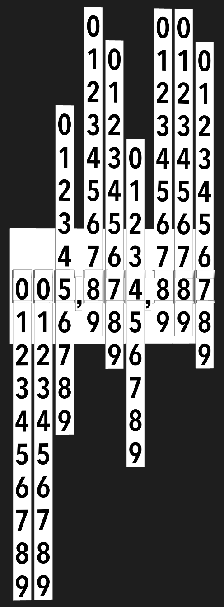

I am not a designer. Nobody has ever confused me with one or accused me of being one. However, I like good design, and have come a long way in appreciating all that goes into it. I'm at the point where I can look at something and not only understand that I like it, but also (some of) why I like it.
However, I have not yet made the jump to being able to create those 'lickable' elements that are both beautiful and invite interaction.
Lately, I've been finding small UI elements in websites and apps and trying to re-implement them on my own. It's fun, and it gives me a chance to really look at the details. When you focus on the details of how something works, you start to see all of the little decisions that were made along the way…and you start to appreciate how difficult a skill it is to make something beautiful.
I figured writing about this will help me solidify what I learn, and others may find it useful.
Late last year (2013) I wound up at Wunderlist and scrolled down their site to see what I thought was a really cool counter that showed how many ToDo items they had at that very second. It pulled those numbers in via a websocket connection that received a message every second or so and updated the UI in a rather interesting way. It looks like that counter is gone now, so I can only show you a bit of my re-creation.

Look at how the numbers sometimes scroll upward and sometimes scroll downward. It's different enough from most physical implementations (e.g. old alarm clocks or gas station pumps) that I was intrigued enough to build it. There were two things that I liked. The scrolling style implied that it was a strip of numbers instead of a disc with numbers on the edge. This is not something that people would build in the physical world. It also has an appropriate use of a decay animation…as if each time the number changed it was flicked by a finger to spin it.
Implementing the Scroller
(Note: Code is available here.)
If you have not tried PaintCode, you really should. It's become both a tool for getting real work done as well as a source for learning more about CoreGraphics. It paid for itself the first day I used it. (Bonus: They also recently added support for generating Swift code, which is ace.) For the scroller, I laid out a quick strip of numbers in PaintCode and then cleaned up the generated code a bit before dropping it into a view class.

Here's what it looks like in Reveal, which is another app that I probably couldn't live without. This shows the strips of numbers for easier understanding. There is a small CALayer on the top and bottom of each digit with an alpha gradient. This allow the numbers to fade away as they animate. I played around with the animation, but the simple ease out curve felt right.
There's not much to it, so I'm gonna stop writing now. Go take a look.